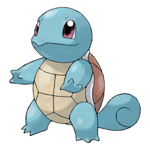
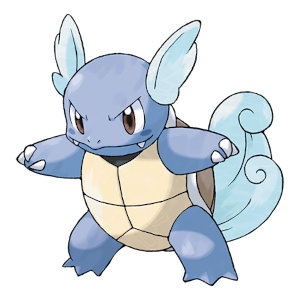
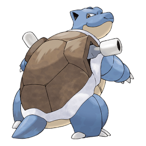

-
Squirtle
Água
Descrição
Quando retrai seu longo pescoço em sua concha, esguicha água com força vigorosa.Quando se sente ameaçado, puxa seus membros para dentro de sua concha e borrifa água de sua boca.
-
Wartortle
Água
Descrição
É reconhecido como um símbolo de longevidade. Se a concha tiver algas, esse Wartortle é muito antigo.Ele controla habilmente suas orelhas e cauda peludas para manter o equilíbrio enquanto nada.
-
Blastoise
Água
Descrição
Ele esmaga seu inimigo sob seu corpo pesado para causar desmaios. Em um aperto, ele se retirará para dentro de sua concha. Os canhões de foguete em sua concha disparam jatos de água capazes de perfurar aço grosso.